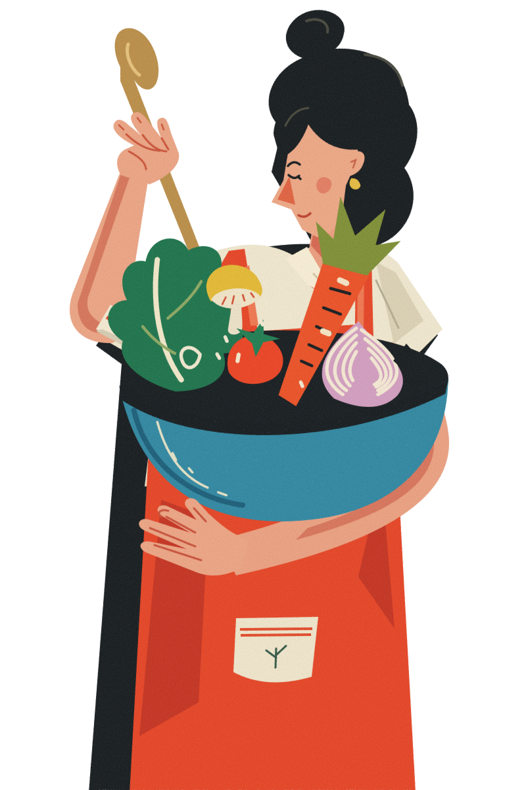
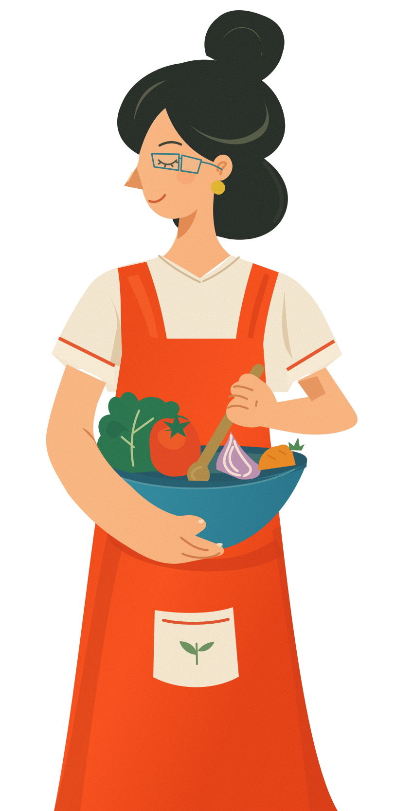
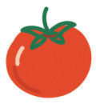
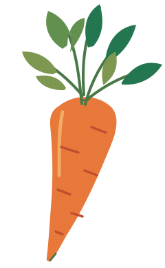
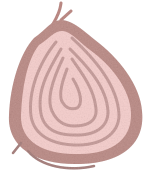
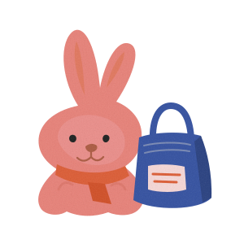
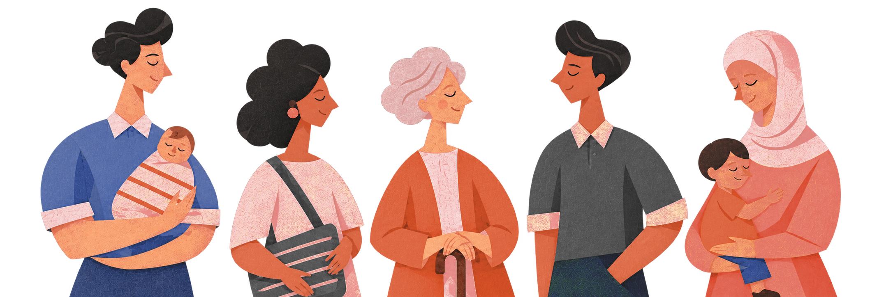
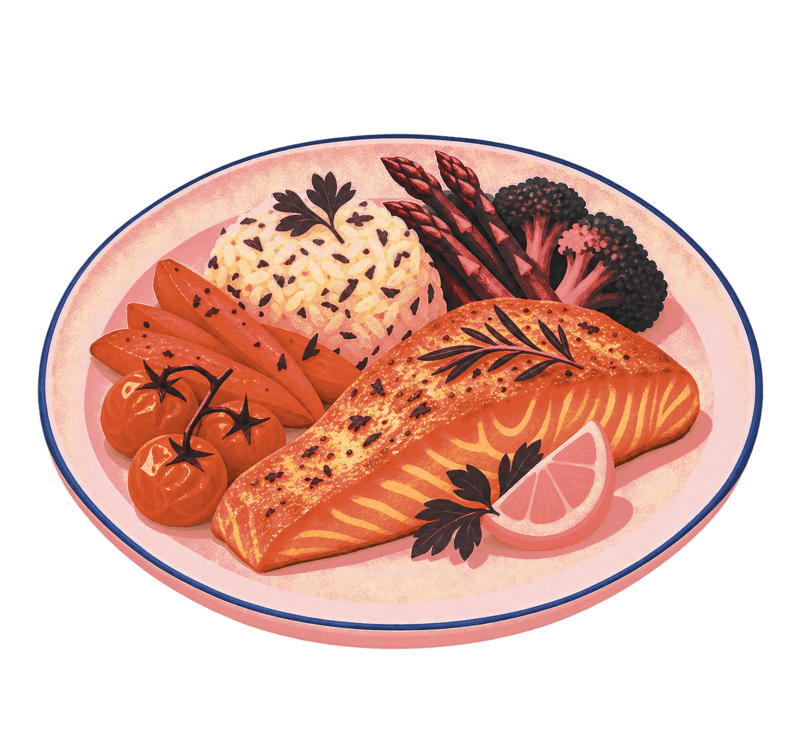

COOK✳
Augmented Reality Culinary Education at Home
Elizabeth Ahn · Brendan Giang · Alana McCareins
Gabrielle Tiu · Leanne Wang


The heart of our story✳
Meet Sara.
- 0129 years old
- 02New mother
- 03Passionate about cooking
- 04Wants healthier meals at home
- 05Busy with work, childcare, and
household responsibilities
Her passion never disappeared.
Healthier meals for her family.




Dining-out costs since 2019+36%
Why should becoming a parent mean giving up on an education you're passionate about?
Sara isn't alone.
50%Childcare or caregiving: a barrier to further education
70%Remote-learning limitations and in-person attendance requirements

World-class culinary education
Limited accessibility
What if culinary school could come to your home?
COOK
Your kitchen. Your culinary school.
Evaluate flavor, texture, and seasoning yourself.

Remember Sara?
Now she's learning on her own terms.
New skills. New recipes. New possibilities.
Education should fit your life.
COOK
Redefining where and how learning happens.